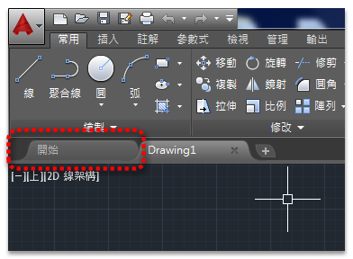
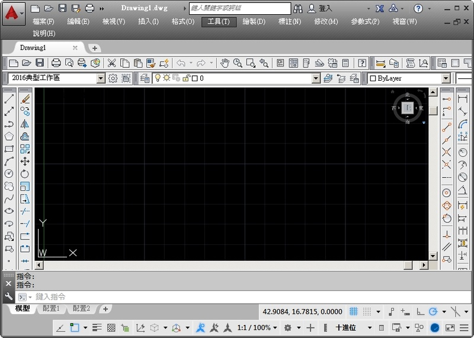
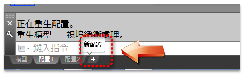
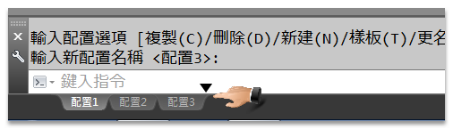
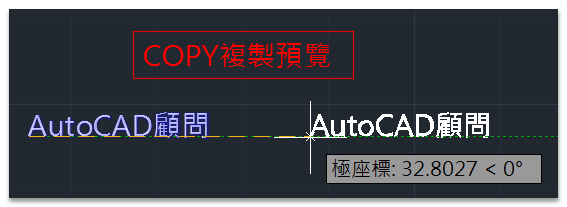
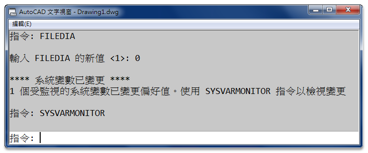
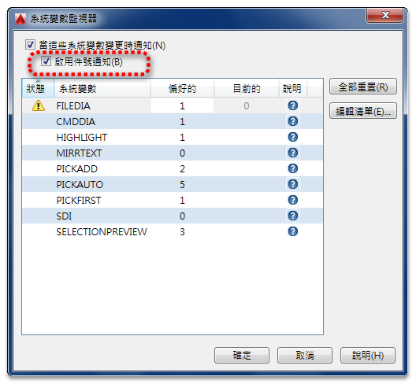
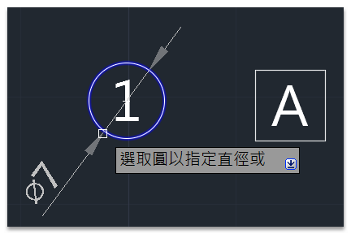
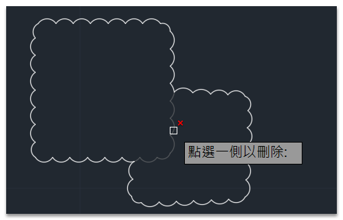

1.控制「開始」頁籤的顯示
STARTMODE (系統變數) 設定為 0 >> 關閉「開始」頁籤


重新啟動AutoCAD會變成以下畫面(無開始頁籤)：

註：重新顯示「開始」頁籤步驟：
指令: STARTMODE
輸入 STARTMODE 的新值 <0>: 1
「開始」頁籤會在應用程式重新啟動後還原。
補充：
步驟1: 在指令行輸入 STARTMODE 的新值 設置 0
步驟2: 在指令行輸入 STARTUP 的新值 設置 0
即可一啟動AutoCAD不顯示 開始 頁籤，就直接開啟新檔。

2.新增/移動「配置」頁籤（2015以上版本）



3.檔案儲存格式
維持 AutoCAD 2013 圖面格式（2013～2016版本）

4.選取效果的顏色
列示可套用於選取效果的顏色設定。您可以選擇清單中的其中一種顏色，或是在「選取顏色」對話方塊中選擇其中一種 AutoCAD 顏色索引 (ACI) 顏色。(SELECTIONEFFECTCOLOR 系統變數)

影片操作：AutoCAD 2016 預覽顯示效果-2D新功能
5.物件鎖點：幾何中心點（gcen）
鎖點至任何封閉聚合線和雲形線的形心。


影片操作：AutoCAD 2016 文字框及幾何中心點-2D新功能
6.MOVE/COPY指令預覽


7.「系統變數監視器」對話方塊
包含系統變數清單，並視需要提供檢視及變更值的存取權限。



8.標註增強
智慧標註自動為您選取的物件選取適用的標註類型，並顯示與該標註類型對應的提示。


▼DIMLAYER (系統變數)：指定新標註的預設圖層。

9.多行文字
使用「性質」選項板，打開文字框

影片操作：AutoCAD 2016 文字框及幾何中心點-2D新功能
10.修訂雲形增強
將物件 (如圓、橢圓、聚合線或雲形線) 轉換為修訂雲形。並且可以透過掣點拉伸修訂雲形，以及使用「修改」副選項加入或移除既有修訂雲形範圍。

